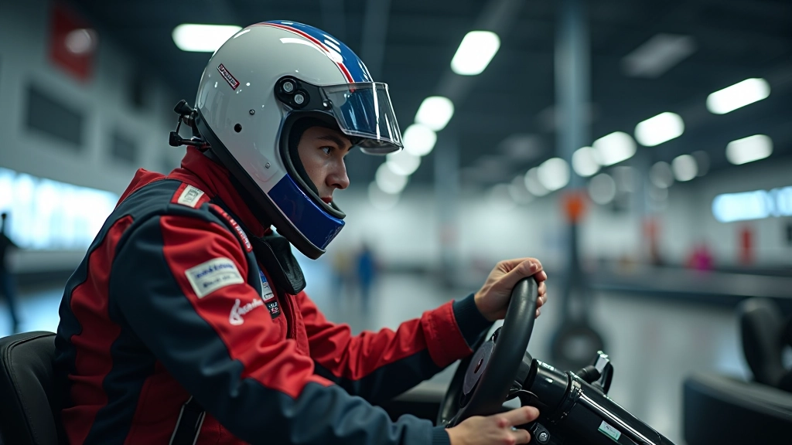

تمارين سرعة ردة الفعل للمبتدئين
تعرّف على أبسط التمارين لتحسين سرعة استجابتك أثناء السباق دون الحاجة لمعدات غالية الثمن.

برنامج تدريب متكامل يركز على تقوية عضلات البطن والظهر والكتفين — الأساس الحقيقي للتحكم الأفضل بسيارتك والأداء المتسق في السباق
القوة الأساسية ليست مجرد عضلات بطن مرئية. إنها الأساس الذي يبني عليه كل شيء آخر في سيارتك. عندما تكون قوتك الأساسية ضعيفة، تشعر بالتعب بسرعة، وتفقد السيطرة على الاتجاه، وتجد صعوبة في الثبات في المنعطفات.
الأشياء الجيدة: بناء قوة أساسية قوية لا يستغرق وقتاً طويلاً. مع تمارين منتظمة لمدة 4-6 أسابيع، ستلاحظ تحسناً ملحوظاً في كيفية شعورك بالتحكم والاستقرار. هذا البرنامج مصمم للسباقين — لا تمارين غريبة أو معقدة.
نحن لن نعقد الأمور. هناك ثلاث تمارين فقط تحتاج إلى التركيز عليها. كل تمرين يستهدف مجموعة عضلية محددة مهمة للسباقين.
يعمل على عضلات البطن والظهر معاً. ابدأ بـ 20 ثانية، وأضف 5 ثوان كل أسبوع. بعد 6 أسابيع ستصل إلى دقيقة واحدة على الأقل. هذا التمرين يبني الاستقرار الذي تحتاجه عند الضغط على الفرامل.
يقوي عضلات الجوانب والكتفين. هذا مهم جداً لأنه يساعدك على البقاء مستقراً في المنعطفات. ابدأ بـ 15 ثانية على كل جانب، وزيادة تدريجية إلى 45 ثانية.
يعمل على عضلات الظهر والأرداف والفخذين. هذا يعطيك القوة التي تحتاجها للبقاء مرتاحاً في المقعد ومتحكماً في السيارة. 20 تكرار لمدة 3 مجموعات هو البداية الجيدة.

لا تحتاج إلى التدريب كل يوم. في الواقع، تدريب كل يوم قد يكون مرهقاً ويزيد من خطر الإصابة. البرنامج الموصى به هو ثلاث مرات في الأسبوع — يوم الاثنين والأربعاء والجمعة، على سبيل المثال.
المدة الإجمالية لكل جلسة: 15-20 دقيقة فقط. هذا يتضمن الإحماء والتمارين والاستطالة.
أيام الراحة: حاسمة جداً. أيام الراحة هي عندما تنمو عضلاتك وتصبح أقوى. لا تتخطها.
التقدم: كل أسبوع، زيادة المدة أو عدد التكرارات بنسبة صغيرة. حتى زيادة بمقدار 5 ثوان أو تكرار إضافي واحد تحدث فرقاً.
اختر التمارين التي تتناسب مع مستوى لياقتك البدنية الحالي. تحقق من الظروف المحلية وسلامة المكان قبل البدء. إذا كان لديك أي مشاكل صحية أو آلام في الظهر أو الرقبة، تحدث مع طبيبك قبل البدء ببرنامج تدريب جديد. هذا البرنامج مصمم للمعلومات والتوعية فقط وليس استشارة طبية.
لا تنتظر شهراً لتشعر بالفرق. في الواقع، ستلاحظ تحسناً في غضون 2-3 أسابيع. السؤال هو: كيف تعرف أنك تتقدم؟
المدة الأطول: هل تستطيع البقاء في تمرين البلانك لفترة أطول بدون الشعور بالتعب؟ هذا علامة واضحة على التقدم.
التحكم الأفضل: هل تشعر بتحكم أفضل عند القيادة؟ هل تشعر بتعب أقل بعد سباق؟
الأداء المحسّن: هل أوقاتك أسرع؟ هل تتعامل مع المنعطفات بشكل أفضل؟
البرنامج نفسه بسيط، لكن هناك بعض الأشياء التي تجعل الفرق بين النجاح والفشل.
لا تحاول أن تقوم بكل شيء في اليوم الأول. تدريب خفيف في الأسبوع الأول يساعد جسدك على التكيف. الإصابات تحدث عندما تتسرع.
ثلاث جلسات منتظمة أفضل بكثير من جلسة واحدة مكثفة في الأسبوع. يريد جسدك الروتين والتوقع.
عضلاتك تحتاج إلى البروتين والكربوهيدرات لتنمو. وجبة خفيفة بسيطة بعد التدريب مثل موز وزبدة الفول السوداني تساعد كثيراً.
الألم الخفيف والعضلات المتعبة طبيعية. لكن الألم الحاد ليس طبيعياً. إذا شعرت بألم حاد، توقف وأرح هذه المنطقة.
بعد شهر، يتكيف جسدك مع التمارين. أضف تنويعات أو تمارين جديدة للاستمرار في التقدم.
احتفظ بملاحظات بسيطة عن عدد التكرارات والمدة. هذا يساعدك على رؤية التقدم وتبقيك متحفزاً.
بناء القوة الأساسية ليس سراً معقداً. إنه يتعلق بالتدريب المنتظم والصبر والاستماع إلى جسدك. ابدأ هذا الأسبوع — اختر ثلاثة أيام، وابدأ بـ 15 دقيقة. بعد 6 أسابيع، ستشعر بالفرق. وبعد 3 أشهر، ستكون النتائج واضحة جداً.
تذكر: كل سباق عظيم يبدأ بأساس قوي. لا تتخطى هذه الخطوة الأساسية. القوة التي تبنيها الآن ستساعدك لسنوات قادمة.
هل تريد تعلم المزيد عن تطوير لياقتك البدنية للسباق؟
اكتشف برامج تدريب أخرى